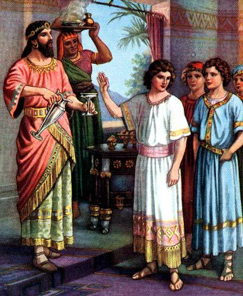
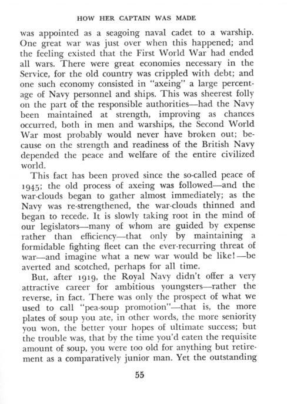
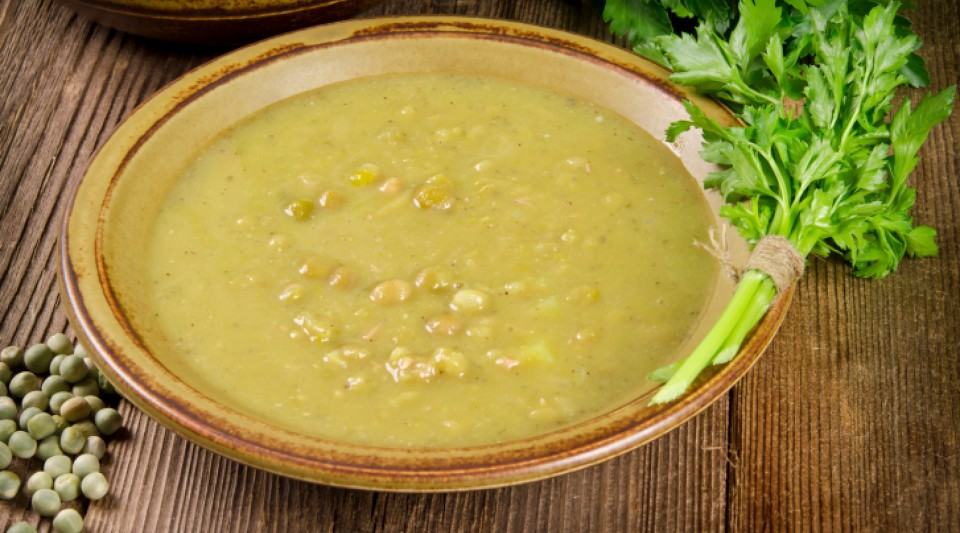
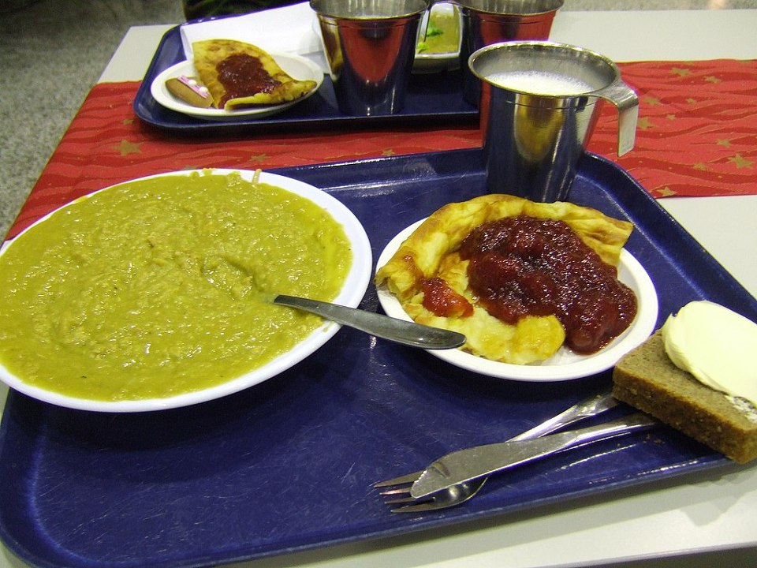
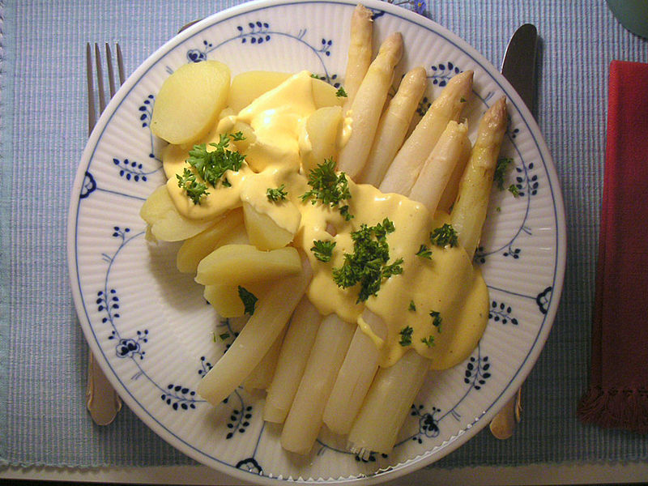
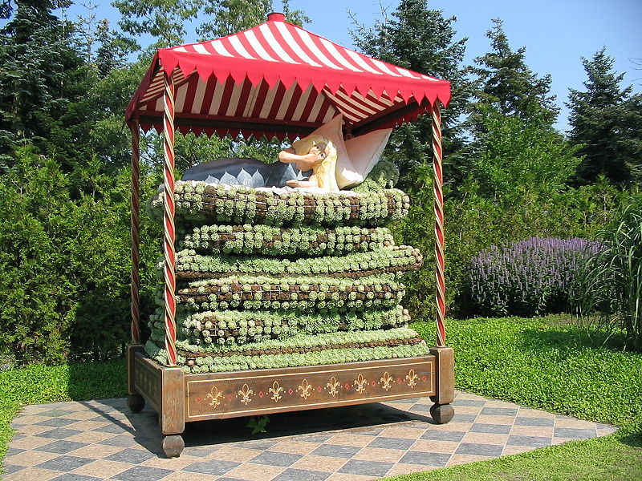
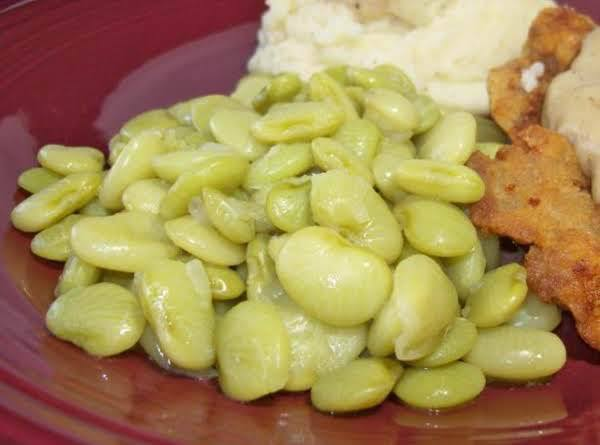
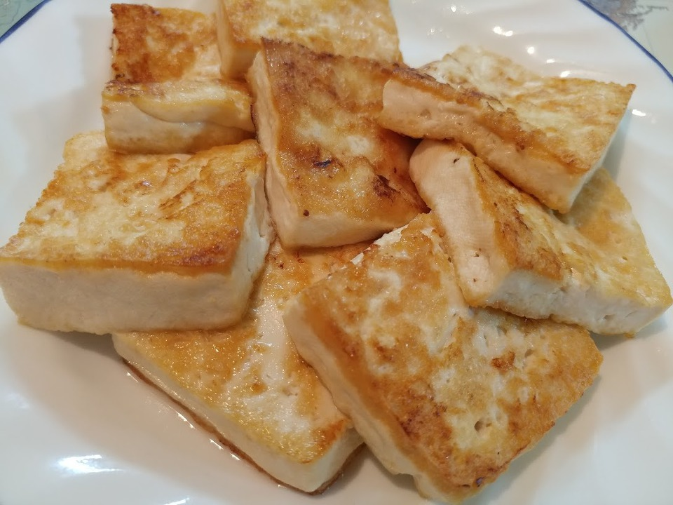
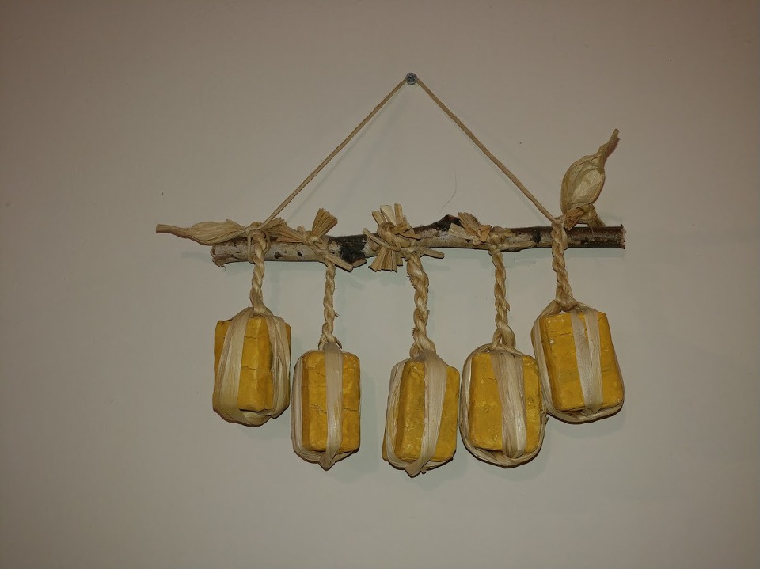
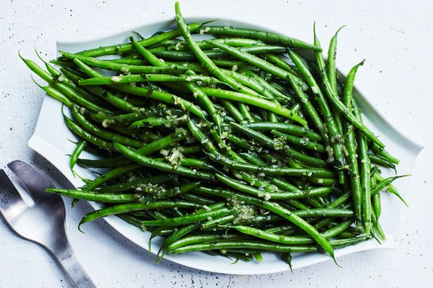

다니엘과 장발장과 나폴레옹의 콩 이야기
게시: 2018-09-03T06:30:00+09:00
한 십여년 전에, 집에서 National Geographic 잡지를 구독한 적이 있었습니다. 와이프가 어찌어찌하다가 구독하게 된 것이었는데, 영문판이었습니다... 그렇쟎아도 내용이 심오한 잡지였는데 영문판이니 더욱 읽기가 어려워 결국 대부분 읽지도 않은채 구독이 끝나버렸지요. 그런데 그 얼마 안 되는 읽은 기사 중에 곡물의 역사에 대한 부분이 있었습니다. 그 중에서도 인상 깊게 기억되는 부분이, "만약 콩이 없었다면 인류는 결코 현재와 같은 모습으로 진화하지 못 했을 것이다"라는 문구였습니다. 즉, 최초의 인류가 아프리카 어딘가에서 태어났을 때 아프리카 평원에 콩류가 없었다면 인류가 큰 뇌를 발달시키는데 필요한 단백질과 지방을 충분히 섭취하지 못했을 것이라는 이야기였습니다. 콩은 지금도 인류에게 값싼 단백질과 기름을 선물하는 매우 귀한 작물입니다. 최근 미국과 중국의 무역 전쟁 때 대두(soy bean)를 둘러싸고 치열한 신경전과 수싸움이 벌어지기도 했지요.
콩이 가격이 저렴하고 구하기도 쉬운 것에 비해 영양과 건강 측면에서는 고기보다 오히려 더 낫다는 것은 성경책에도 나옵니다. 구약 다니엘서 1장 12절~15절 부분이 바로 그것입니다. 이 부분의 배경은 바빌로니아의 느부갓네살 왕이 유다를 정벌하고 다니엘을 비롯한 유대인 귀족 청년들을 인질로 잡아간 뒤 바빌로니아 궁전에서 벌어지는 일입니다. 당시 그 지방의 풍습에 따라 이렇게 인질로 잡혀간 타민족 귀족 청년들은 노예치고는 좋은 대접과 교육을 받고 바빌로니아 왕국에 충성하도록 육성되었지요. 그런데 다니엘은 유대인인지라 돼지고기나 토끼고기등 먹는 것에 가리는 것이 많았고, 바빌로니아 사람들이 먹는 고기를 먹고 싶지 않았습니다. 그래서 고기와 와인을 먹이려는 느부갓네살 왕의 환관과 협상을 하지요.
(단 1:12) 청하오니 당신의 종들을 열흘 동안 시험하여 채식을 주어 먹게 하고 물을 주어 마시게 한 후에
(단 1:13) 당신 앞에서 우리의 얼굴과 왕의 음식을 먹는 소년들의 얼굴을 비교하여 보아서 당신이 보는 대로 종들에게 행하소서 하매
(단 1:14) 그가 그들의 말을 따라 열흘 동안 시험하더니
(단 1:15) 열흘 후에 그들의 얼굴이 더욱 아름답고 살이 더욱 윤택하여 왕의 음식을 먹는 다른 소년들보다 더 좋아 보인지라

(다니엘이 바빌론 왕이 내리는 음식을 거부하는 장면입니다.)
요즘 상식으로 생각하면 고기와 술 대신에 채소와 물을 먹고 마시면 피부가 더 좋아지는 것은 당연하겠지요. 그러나 정말 배추나 시금치 같은 채소만 먹고 다니엘이 건강을 유지할 수 있었을까요 ? 아마 체중이 많이 줄었을 것 같은데요. 하지만 고기를 먹는 다른 노예 소년들에 비해 다니엘과 유대 소년들은 살이 빠져 비리비리한 모습이 된 것은 아니었습니다. 대체 무슨 채소를 먹었던 것일까요 ? 바로 콩이었습니다. 어떻게 아냐고요 ? 킹 제임스 버전의 영문판 성경을 읽어보면 나옵니다.
Daniel 1:12 Prove thy servants, I beseech thee, ten days; and let them give us pulse to eat, and water to drink.
여기서 pulse라는 단어가 나오는데, 저도 이번에 사전 뒤져보고 알았습니다만 이 pulse는 심장 박동이라는 뜻이 아니라 콩류를 뜻하는 단어더군요. 이렇게 종교적 이유로 미심쩍은 육류를 피하는 주민들을 위해 콩을 공급한 사례는 비교적 최근에도 있었습니다. 전에 미군이 9.11 사태 이후 아프가니스탄을 침공하기 위해 준비 중일 때, 아프가니스탄 주민들에 대한 사전 공작의 일환으로 주민들에게 일종의 전투 식량 같은 레토르트 포장의 식품을 수송기를 이용해 대량으로 공중 살포한 적이 있었습니다. 그때 사악한 미국놈들이 음식에 돼지고기를 섞었을 수도 있다고 주민들이 생각하면 곤란하니까, 아예 육류는 철저하게 빼고 100% 식물성으로 된 음식을 뿌렸습니다. 전투 식량처럼 휴지와 사탕, 포크 등이 포함된 그 식량 팩 메뉴 중 주식으로 넣은 것이 '식초로 맛을 낸 콩'이었지요. 저는 그때 그 기사를 읽으면서 과연 그 콩 요리는 어떤 맛일지 정말 궁금했는데, 불행히도 아직까지 맛을 보지 못했습니다. 그 요리 이름도 모르겠어요.
실제로 콩류는 지금도 곡물(grain)이 아니라 채소(vegetable)에 속하는 콩류(legume)으로 분류됩니다. 이건 나폴레옹 시대도 마찬가지였습니다. 나폴레옹 전쟁 당시 프랑스군의 일일 배식 품목을 보면 특이한 것이 하나 있습니다. 바로 건조 채소입니다.
빵 1.5 파운드
고기 1.1 파운드
건조 채소 0.25 파운드
브랜디 0.0625 파인트
와인 0.25 파인트
식초 0.05 파인트
건조 채소가 나온다고 해서 '역시 프랑스는 영국과는 달리 영양의 균형을 생각하는 미식가의 나라'라고 생각해서는 곤란합니다. 여기서 건조 채소라는 것은 영국군도 자주 배식하던 말린 완두콩을 뜻하는 것이 대부분이었거든요. 1800년의 제2차 이탈리아 침공 때부터 나폴레옹 밑에서 사병으로 복무했던 쿠아녜(Coignet)의 회고록에도 '아마 천지창조 때 함께 창조된 것처럼 오래된 말린 콩'이 배급되었다는 이야기가 나옵니다.
당시 병사들은 이렇게 말린 콩으로 어떤 요리를 해먹었을까요 ? 여기에 대해서는 영국 해군이 아주 좋은 답변을 주고 있습니다. 바로 완두콩 수프(pea soup)입니다. 군대, 특히 군함에서는 말린 완두콩이 매우 좋은 식품으로 무척 각광받았습니다. 이유는 여러가지가 있는데, 일단 싸고, 잘 말리면 아주 오래 보존이 가능한데다 부피도 작고, 특히 알갱이가 작다보니 헐렁한 자루에 넣어서 보관하면 건빵과는 달리 좁은 뱃바닥 구석진 공간에도 비집고 들어가기 딱 좋은 형태로 구겨져서 보관 공간도 적게 차지했던 것입니다. 하지만 무엇보다 좋은 점은 푹 삶기만 하면 맛도 괜찮고 아주 든든한 수프가 된다는 점이었습니다. 당시 수병들도 매주 똑같이 주어지는 염장고기와 건빵, 오트밀 등의 단조로운 식사 중에서 오직 불평하지 않은 것은 럼주와 이 완두콩 수프였다고 합니다.
영국 해군에서는 이렇게 하도 완두콩 수프를 많이 먹다보니, '완두콩 수프 진급'(pea-soup promotion)이라는 용어까지 나왔습니다. 이건 우리나라 군대의 '짬밥'과 똑같은 의미로서, 복무 기간이 길어서 연공 서열에 이루어지는 진급을 뜻하는 단어입니다.

(이 책은 제1차 세계대전에서 활약했던 영국 해군 Frank H Shaw 대령이 쓴 "The Navy of Tomorrow"의 일부입니다. 책 아래 부분을 보면 pea-soup promotion이라는 단어와 그에 대한 설명이 나옵니다. 소스는 http://www.godfreydykes.info/PROPER%20NAVAL%20RESEARCH.htm )

(완두콩 수프입니다.)

(이건 핀란드식 완두콩 수프라는데, 수프라기보다는 죽에 가깝군요 !)
완두콩 수프는 당시 농부/노동자 계급 가정에서도 일상적으로 먹던 음식이었습니다. 결코 비싼 음식은 아니었습니다. 또 요즘 수퍼 푸드라고 각광받는 렌틸콩(lentils) 같은 경우, 고대시절부터 빵조차 마음대로 못 먹는 가난한 농민들의 주식으로 애용된 매우 저렴한 음식이었습니다. 그런데, 비싼 콩도 있었을까요 ? 제가 어릴 때 어린이 문고판 버전의 레미제라블을 읽고 뭔가 환상을 가지게 된 것이 있었습니다. 바로 '푸른콩'에 대한 것이었어요. 지금은 그 구절 하나하나가 잘 기억나지는 않습니다만, 대략 선량한 빈민으로 변장한 테나르디에가 자선 활동을 하던 장발장을 공범들과 함께 자기 집으로 유인하여 묶어놓은 뒤, '푸른 콩을 먹는 너희 같은 부자들은 우리 같은 빈민들의 사정을 모른다'라며 화를 내는 장면이었습니다. 어린 저는 그 구절을 읽으면서 '아, 푸른콩은 비싼 음식인 모양이구나'라고 생각했습니다.
문제는 제가 푸른콩이 뭔지 잘 모른다는 점이었는데, 처음에는 완두콩을 말하는 것인가 생각했었습니다. 그런데 완두콩이 뭐 그렇게까지 비싼 콩은 아니쟎아요 ? 그러다 나중에, 직장 다니면서 미국에 출장갔다가 줄기콩이라는 채소를 먹어보게 되었습니다. 저로서는 콩깍지 채로 먹는 신기한 채소를 본 셈인데, 나중에 그 채소 이름이 green bean(string bean이라고도 하지요)이라고 한다는 것을 알고 어렸을 때 읽었던 푸른콩이 아마 이 채소인 모양이다라고 생각했었습니다. 요즘에는 국내에서도 줄기콩이라는 이름으로 자주 접할 수 있는 채소가 되었지요. 일반 콩보다는 약간 비싼 가격으로 팔린다고 알고 있습니다.
그런데 불어판 레미제라블을 찾아서 (물론 구글 번역기의 도움을 받아) 읽어보니, 의외로 어렸을 때 읽은 '푸른콩'은 줄기콩이 아니라 그냥 완두콩이더라구요 ?
"Vous mangez des truffes, vous mangez des bottes d'asperges a quarante francs au mois de Janvier, des petits pois, vous vous gavez, et, quand vous voulez savoir s'il fait froid, vous regardez dans le journal ce que marque le thermometre.
너희들은 송로버섯을 먹고, 1월달에 한 단에 40프랑 하는 아스파라거스와 완두콩(petits pois)을 실컷 먹고, 얼마나 추운지 알고 싶을 땐 신문에서 온도계 눈금이 얼마인지를 찾아보지."
당시 40프랑이면 현재 우리 돈으로 약 40만원 정도인데, 비닐하우스도 없던 당시 아스파라거스를 1월에 먹으려면 이렇게 무척 비쌀 수 밖에 없었을 것 같습니다. 로마시대에는 겨울 축제 때 아스파라거스를 쓰려고 알프스 산맥 높은 곳에 쌓인 눈 속에 묻어서 냉동 보관하기도 했다지요.

(이건 흰 아스파라거스입니다. 저도 신입사원 즈음에 외국 출장 나갔다가 처음 아스파라거스를 먹어보고는, 무슨 채소인진 몰라도 옥수수 비슷한 맛이 나서 신기하게 생각했었습니다. 궁금함을 못 참고 그 외국 host에게 이게 무슨 채소냐라고 물었더니 그 외국인이 아니 그것도 모르냐는 표정으로 아스파라거스라고 알려주던 것이 기억납니다. 그때의 경험 때문에, 저도 애를 여기저기 데리고 다닐 때마다 좀 색다른 재료로 만든 색다른 음식을 다양하게 맛보게 하려고 노력하는 편인데, 애는 그런 제 노력을 그냥 잔소리로 거부하여 그만 FAIL...)
그러나 완두콩은 대체 왜 비싼 음식으로 여기에 나열되었을까요 ? 처음에는 저는 pois가 완두고 petit는 작다는 뜻이니, 아마 완전히 자란 완두콩 말고 아직 어려서 부드럽고 작은 완두콩은 더 비싼 음식이었나보다 라고 생각했습니다. 그러나 인터넷을 뒤져보니 (아, 정보화 세상 정말 좋습니다) 그것도 아니더군요. Pois는 그냥 식물로서의 완두를 말하는 것이고, 사람이 먹는 완두콩은 보통 petit pois라고들 부른답니다. 가령 안델센 동화 중에서 20장의 매트리스와 20장의 오리털 이불 밑에 넣어둔 완두콩이 배겨서 잠을 못자는 여자를 진짜 공주로 인정했다는 '공주와 완두콩' 이야기의 불어 번역도 'La Princesse au petit pois'라고 petit를 붙인 pois를 씁니다.

('공주와 완두콩' 이야기에 나오는 20장의 매트리스와 20장의 오리털 이불이 있는 침대 위에 누운 공주의 모습입니다. 관광객 유치용으로 덴마크에 만든 것이래요.)
결국 왜 레미제라블의 테나르디에가 완두콩을 전형적인 부자들의 음식으로 지칭했는지는 아직까지도 모르겠습니다. 완두콩이 일반 대두나 강낭콩 같은 것보다 더 비싼가 싶어서 외국 인터넷 쇼핑몰에서 콩 가격을 살펴보았는데 의외로 콩 종류에 따라 가격 차이가 거의 없더라구요. 완두콩이라고 더 비싼 것은 아니었습니다. 제가 카투사로 미군에 복무할 때, 한번은 평택 지역에 가서 야전 훈련을 뛴 적이 있었습니다. 그런 경우 대부분의 식사는 맛없는 MRE(Meal Ready to Eat)를 뜯어먹는데, 마지막 날은 평택의 Camp Humphreys에서 대형 금속제 용기에 더운 밥을 실어다 먹여주더군요. 그때 메뉴는 잘 기억이 안나는데, 그 중 더운 채소, 즉 hot vegetable로 나온 것이 리마콩(lima beans)이었습니다. 보통 콩보다 한 2배는 더 큼직하고 납작한 연두색 콩을 뭔가 닭이나 돼지 육수 같은 것과 함께 삶은, 간단한 요리였어요. 나름 맛있더군요. 저는 그때 그렇게 큰 콩은 처음 보는 것이어서, 옆의 미군에게 '야 이 콩은 이름이 뭐냐' 라고 물으니 '라이마 빈즈'라고 답을 하면서 '그거 비싼 콩이야'라고 답을 하더라고요. 그런데 이번 기회에 외국 인터넷 쇼핑몰에서 가격을 보니... 비싸긴 개뿔, 그냥 완두콩이나 대두나 리마콩이나 다 가격은 비슷비슷하던데요 ?

(제가 그때 야외 훈련장에서 먹었던 리마콩이 딱 저렇게 생겼습니다. 다만 이 사진 속의 콩은 너무 삶아서 콩이 물러터진 것처럼 보이네요. 스파게티 면이나 콩이나 알덴테(al dente)로 약간 씹는 맛이 있어야 좋은데 말이지요.)
영국 해군 수병들이나 나폴레옹의 병사들이나 미군이나 콩은 기본적으로 삶아서 먹는 것이었습니다. 그에 비해서 동양에서는 좀더 복잡하게 가공해서 먹는 경우가 많았습니다. 콩을 그냥 삶아서 먹는 건 소나 말 여물 줄 때나 그렇게 하는 것이었지요. 가령 김성한 작가의 소설 '임진왜란'을 보면 다음과 같은 장면이 나옵니다.
조선 조정은 명군의 요구대로 그들에게 일정한 급식을 약속하였다. 장군들에 대해서는 각각 접반사가 따라붙어 특별한 대접을 하는 외에 천총, 파총 등 장교 이하 사병에 이르기까지 질서정연한 식단이 마련되어 있었다.
. 장교들에 대해서는 천자호반(天字號飯)이라 하여 고기, XX, 채소, 자반 각 한접시, 밥 한그릇, 술 석 잔.
. 각 관아에서 파송되어 온 연락관에 대해서는 지자호반(地字號飯)이라 하여 고기, XX, 채소 각 한접시에 밥 한그릇.
. 일반 병사들에 대해서는 인자호반(人字號飯)이라 하여 XX와 소금에 절인 새우 각 한접시에 밥 한 그릇.
. 그들이 타는 말에 대해서도 규정이 있어 한끼에 콩 소두 한말, 풀 한단씩. 단 점심에는 삶은 콩을 소두로 4되.
여기서 명나라 군대의 장교부터 말단 졸병까지 모두의 식단에 공통적으로 들어가는 저 XX라는 음식은 무엇이었을까요 ? 두부였습니다. 명군의 말까지도 콩을 꼭 먹이도록 되어있었으니 사람이나 짐승이나 결국 다 콩을 필수적으로 먹었던 셈입니다. 다시 한번 콩의 식품으로서의 우수성이 드러나는 부분이지요.

(저는 두부를 그냥 부쳐먹는 거 좋아합니다.)

(한국의 콩 요리 중에서 최고봉은 메주로 만든 된장이지요. 메주치고는 너무 예쁘지요 ? 어느 식당 벽에 걸린 플라스틱 장식품을 제가 사진으로 찍어온 거에요.)
오늘의 콩 이야기도 나폴레옹의 일화로 마무리하겠습니다. 나폴레옹이 콩 종류를 좋아하는 편이었습니다. 아침은 버터에 부친 달걀 프라이와 함께 콩 샐러드를 먹었다고 하지요. 그 외에도 원정 때 전쟁터 근처 밭에서 흔히 구할 수 있던 식량인 감자와 함께 콩과 렌틸콩 같은 것도 매우 좋아했다지요. 이집트 원정 때도 카이로를 향해 진격할 때, 병사들은 '이집트 농민들을 약탈하지 말라'는 그의 명령을 무시하고 재주껏 닭 같은 것을 훔쳐다 먹었지만, 그는 끝까지 굳건하게 나일 강변의 농가에 잔뜩 쌓여 있던 파바(fava) 콩 삶은 것만 줄기차게 먹었다고 합니다. 덕분에 그의 참모들도 카이로를 점령할 때까지 지겹게 콩만 먹어야 했다고 하지요. 그렇게 콩을 좋아하던 나폴레옹이 유일하게 절대 식탁에 올리지 못하게 한 콩이 있었으니 바로 줄기콩(불어로는 haricot vert, 푸른 콩이라는 뜻인데 깍지 채로 먹습니다)이었습니다. 나폴레옹이 줄기콩 맛이나 식감을 딱히 싫어했던 것은 아니었답니다. 다만 깍지 채 먹는 채소이다보니, 필연적으로 깍지에 딸려있는 긴 심지 같은 섬유질이 미처 제거되지 못하고 딸려올 수 있는데, 나폴레옹은 그런 것이 입 안에 들어오면 마치 사람 머리카락처럼 느껴져서 구역질을 했다고 합니다. 나폴레옹은 그 정도로 음식에 들어간 머리카락을 싫어했던 것이지요.

(줄기콩 요리입니다. 저도 이거 매우 좋아합니다.)
그런 나폴레옹이 한번은 어느 전투 현장을 시찰하며 병사들의 생활 환경을 검열하는 중에, 병사들이 마침 끓이고 있던 수프를 한 접시 달라고 요청했습니다. 나폴레옹은 그렇게 병사들이 먹는 음식을 같이 먹으며 병사들과의 유대감을 높이는 것을 좋아했습니다. 그런데 먹다보니 수프에서 그만 머리카락이 나왔습니다 ! 나폴레옹이 재빨리 주변을 둘러보니, 근위대 병사가 나폴레옹에 대한 외경심으로 바짝 얼은 채 보고 있더랍니다. 이런 와중에 'ㅆㅂ 나 안 먹어'라고 수프를 내동댕이치면 병사들이 뭐라고 생각하겠습니까 ? 나폴레옹은 진짜 영웅이었습니다. 그는 침착하게 머리카락을 건져내고 그 수프를 싹싹 긁어먹은 뒤, 한 접시 더 달라는 호기까지 부렸습니다. 그런데 나폴레옹의 집사였던 콩스탕(Constant)의 회고록에 따르면 그 두번째 수프 그릇에서도 그만 머리카락이 나왔다고 합니다. 나폴레옹이 과연 그 두번째 접시까지 다 비웠는지는 기록이 없네요.
Source : Les Miserables by Victor Hugo
http://www.foodtimeline.org/foodcolonial.html
http://www.godfreydykes.info/PROPER%20NAVAL%20RESEARCH.htm
https://www.harmonyhousefoods.com/Bean-Legume-Family-Pack-8-Varieties-Gallon-Size_p_1849.html
http://www.piratesurgeon.com/pages/surgeon_pages/pork2.html
http://www.godfreydykes.info/THE_GOODNESS_IN_PEA_SOUP.htm
http://www.naturalhub.com/natural_food_guide_grains_beans_seeds.htm
https://www.biblegateway.com/passage/?search=Daniel+1%3A12-15&version=AKJV
https://fr.wikipedia.org/wiki/La_Princesse_au_petit_pois
https://www.epicurious.com/recipes/food/views/haricots-verts-with-herb-butter-240576